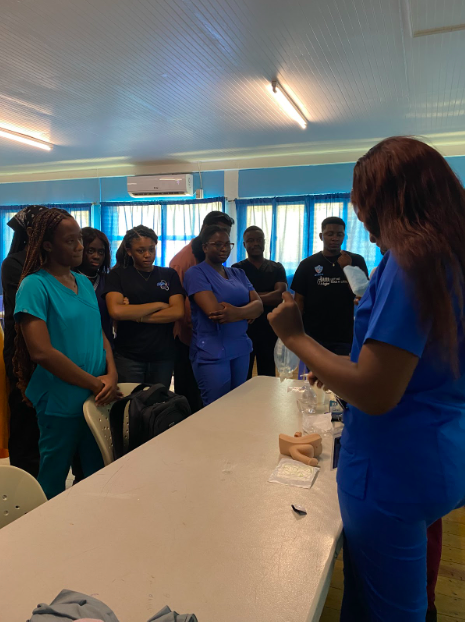
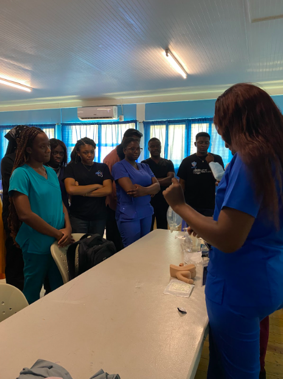

ENGAGE current and future women surgeons to realize their professional and personal goals. EMPOWER women to succeed.
EXCEL in those aspirations through mentorship, education and a networking community that promotes their contributions and achievements as students,
surgeons and leaders.
WHY JOIN AWS.ASUSM?
Association of Women’s Surgeon All Saints University is an excellent choice for students who are passionate about pursuing a career in medicine, especially areas considered surgery specialities or subspecialty.
The association offers programs in medicine and nursing, providing students with the knowledge and skills they need to succeed in their chosen field. With a focus on hands-on training, forums and real-world experience,
Association of Women’s Surgeon All Saints University prepares its members for success in the ever-evolving world of healthcare.
MEMBERSHIP
Membership for new members would be 70ec and for returning members would be 50ec. There is a discount of 10ec off, valid for the first block of every semester.
We give certificates for every event attended and for members so there is proof of participation. Merch is available for members. (terms and conditions apply).
ALUMNI
All Saints University has a lumni spread
across continents making significant
contributions in the field of medicine.
All Saints University has records of
alumni practicing medicine in various
countries, including the United States,
Nigeria, Canada, and Dominica, and many
more countries. The AWS.ASUSM has made
networking with alumni of our university
and even guest alumnus of other great
schools. The association fosters lifelong
connections and networking opportunities
for students as opportunities are created.
The association organizes various events,
and workshops as an avenue to foster graduates
and undergraduate relations; it also serves as a
way to keep everyone updated on the latest
developments in healthcare.
Residency
Appointments - All Saints University has
all the persons and residency location of
our local chapter and amazingly, they either
have been a member of AWS or have impacted us
by honoring invitations to help create a path
for the incoming health care worker.
EVENTS
{Events are tailored to these groups for each
tenure; so persons can expect to have a
privilege to get to participate in all these events}
*Surgical skills series
*Volunteer series
*Research series
*Academic series
*Match series


 
